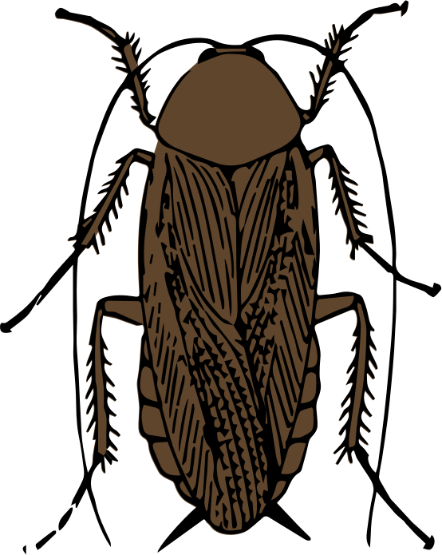
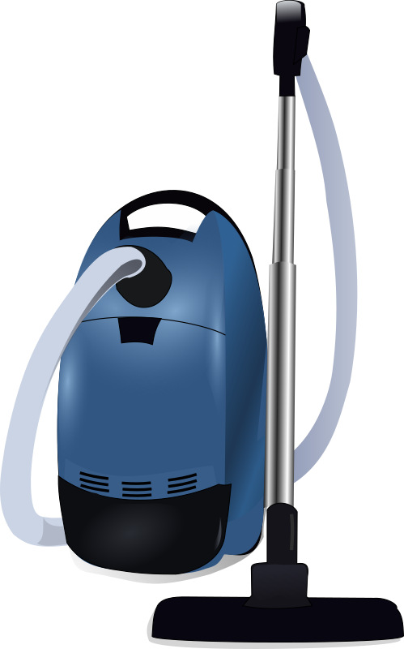

| 1 2 3 4 5 6 7 8 9 10 11 12 13 14 15 16 17 18 19 20 21 22 23 24 25 26 27 28 29 30 31 32 33 34 35 36 37 38 39 40 41 42 43 44 45 46 47 48 49 50 |
| 18:49:00 | ALPHA |  Updated |
| 18:48:30 | STATUS |  And that's where it will end for today |
| 18:45:11 | FONT |  ) |
| 18:45:09 | FONT | ( |
| 17:39:27 | FIXED |  Incorrect object kill |
| 17:36:20 | FIXED | And that should fix a certain problem I had |
| 17:36:06 | FONT | Packed |
| 17:35:59 | SOLVED |  Aha! |
| 17:29:14 | FAILURE |  Although I wonder why the generator takes so long to generate the new font :-/ |
| 17:28:23 | FONT | Asterisk |
| 17:23:05 | CONFIRMED | |
| 17:18:44 | CLOSED | |
| 17:13:14 | SOLVED | Aha! Found it! |
| 17:09:27 | DEBUG |   The log confirms the error message is impossible, as the requested type combination is there.... Then why does that type combination meet rejection? |
| 17:07:42 | COCKROACH | Walk to spot refuses to work |
| 17:01:44 | FIXED | Test version not properly rebuilt... Yeah even that needs to be done sometimes |
| 16:52:11 | LINK |  Linked the scenario to the map... Let's see if it works, eh |
| 12:29:59 | SCENARIO |  Ryanna meets Nino |
| 12:00:47 | CONFIRMED | That appears to be working |
| 11:55:35 | MAP |  Nino is placed at the entrance of Wind Ville with this two groupies |
| 11:40:03 | ART |  Alternate female |
| 11:34:42 | ART |  And here it is, the basis sprite for Prince Nino. It's not animated yet, and I even ain't in a hurry for that as there's still a lot to do before the time comes for Nino to join Ryanna in her quest. |
| 11:15:48 | FIXED | Picture not properly suffixed with .png |
| 11:11:22 | RYANNA |  Building config adapted |
| 10:59:26 | MAP | Two guards placed at the entrance. Since they are standing beyond the exit triggering zone, you can't talk to them... ever! |
| 10:53:13 | ART | And a cameo as been added as well |
| 10:53:00 | ART | And I've recycled some art as it would be pointless to draw that anew |
| 10:52:39 | STATUS | Although my work on Maneschijn and GJCR is far from done I decided to resume the game for now, as it's getting to far behind and that may eventually take up my motivation to continue.... |
| - = 20 May 2018 = - |
| 17:59:12 | BACKUP |  Another one |
| 12:57:56 | TODO |  - Filters
- Save mode
- Manual file name for savemode
- File exists warning for save mode
|
| 12:56:15 | BACKUP | Running |
| 12:56:11 | CONFIG |  xtra backup config |
| 12:55:32 | STATUS | I'll leave it there for now... I'll be back soon |
| 12:54:36 | VERIFIED | And that all works |
| 12:54:11 | DONE |  Favorite Remove |
| 12:54:03 | DONE | Favorite add |
| 12:38:30 | FIXED | nil reference in set jcrx environment vars |
| 12:19:40 | CLEANUP | Debug line deactivated |
| 12:11:41 | DONE | And selecting a file by double clicking it |
| 12:11:32 | DONE | Dir changing in file selector |
| 12:00:19 | FIXED | Directory issue |
| 11:58:58 | LAZY |  Aliasing functions |
| 11:57:32 | DONE | "Ok" button should be operative now |
| 11:32:57 | FIXED | Some bugs present in the process |
| 11:28:39 | MANESCHIJN |  Auto-enable "Ok" |
| 11:28:30 | MANESCHIJN | Cancel |
| 11:09:55 | ENHANCEMENT |  Listbox - AutoStripDir |
| 11:02:11 | MANESCHIJN | Volume selector should now work, although this is not yet fully tested. |
| 11:01:56 | MANESCHIJN | Parent dir button works |
| 10:16:06 | LUA |  Labels |
| 10:15:04 | MANESCHIJN | Distinguish files from dirs |
| 00:35:43 | STATUS | and that ends this session for today! |
| 00:35:35 | BACKUP | Running |
| 00:35:22 | GITHUB |  All pushed |
| 00:35:17 | MANESCHIJN | Callback support WITHIN the file requestor |
| 00:22:10 | MANESCHIJN | Filelist |
| 00:21:59 | FIXED | Hotfixes to cdglob() |
| 00:09:24 | ENHANCEMENT | cdglob() |
| 00:09:15 | MANESCHIJN | Some stuff done |
| - = 19 May 2018 = - |
| 20:41:00 | BUG | |
| 17:53:58 | MANESCHIJN | File request + and - for favorites added |
| 17:44:40 | LUA | As well as in the regular libraries |
| 17:44:31 | MANESCHIJN | Several fixes |
| 17:38:07 | FIXED |  Flagless crash |
| 17:35:35 | HUH |  Yeah, that's odd, I know |
| 17:35:28 | FIXED | No code changed and still something fixed.... |
| 17:21:40 | GITHUB | A repository has been set up for "fake gale".... Some routines will be put there later for faking GALE into LÖVE. I'll need when the conversion projects for REVAMING, Dyrt and Star Story begin. TFT REVAMPED will also be "re-revamped" this way eventually, but I hope you can forgive me that project has the least of priority now. |
| 17:19:39 | STATUS | I couldn't do much.... I needed to slow down anyway, but I also had to bring some stuff of mine away for repairs, and that took a lot of my day. |
| - = 18 May 2018 = - |
| 20:12:54 | MANESCHIJN | I've done some work on the file requestor |
| 16:22:24 | LINUX |  That is, it can for Windows and Mac, and not for Linux. Apparently it's a completely useless feature to have a easy way to find out mount points. Piping a call to "mount" is not a solution, as the information is easy to parse by a human brain, but NOT by a computer. As distros are not completely in one line on this (one distro uses /media and the other ~/media and son on, I cannot "assume" things like I can on Mac (where they are all regular volumes are mounted in /Volumes and on Windows where drive letters are used). |
| 16:21:12 | MANESCHIJN | The file requestor can now detect all volumes |
| 14:58:12 | LUA | Library for jcrx envorionements |
| 12:32:28 | ENHANCEMENT | Ryanna now features a table copy routine which can even work recursively if needed. Working on the same pointers is not always the best way to go, you know |
| 12:31:16 | FIXED | Made a variable in Ryanna's core a local to prevent conflicts elsewhere |
| 11:56:45 | LUA | Eclipse refresh |
| 11:54:02 | GO |  JCRX has been expanded with its own environment variable system. GJCR will very likely make sure of this as well as the lua versions of Kthura and MyData |
| 11:36:54 | GITHUB | I've set up a "company" for my test labs... Bigger test applications for my work can be posted there, for evaluation purposes. Most of what will be posted there will be regarded as public domain. |
| 11:35:57 | MEDICAL |  I do feel a littlebit better now, BUT I know I still have to take it easy |
| - = 17 May 2018 = - |
| 14:15:36 | MEDICAL | It seems my hard work is taking its toll... I need rest... I'll suspend the project for at least the rest of this week, in order to rest. I hope I'll be better and be able to resume the project soon... |
| - = 15 May 2018 = - |
| 15:21:10 | STATUS | As I do not have the time now to fully go into this (and this is gonna be quite complex code), I'll have to leave it there... |
| 15:20:23 | GITHUB | pushed |
| 15:18:02 | SCRIPT |  Skeleton for file requestor |
| 14:41:27 | LUA | glob library |
| 14:23:35 | RYANNA | A few extra functions in the JCR6 core script |
| 14:16:43 | TECHNO |  And LOVE does not provide it as LOVE is only meant to create a "safe" environment. Although the "unsafe" routines of Lua remain, no extra features have been added. |
| 14:16:00 | TECHNO | The "glob" feature has been put in JCRX because Lua does not provide such routines as C does not provide it by default and in order to keep Lua compitable with any version of C, they didn't wanna add features to it that would require stuff C does not provide by default. |
| 14:14:25 | GO | JCRX has been expanded with a "glob" feature |
| 13:58:50 | STUDY |  At leat I found the 'Glob' method, so I guess THAT will have to do.... Not the most elegant method, and completely useless in Linux (as every distro has its own directory for auto mounting drives, and manually mounted drives on different locations are ignored this way, oh well). |
| 13:57:17 | FAILURE | But apparantly that feature is completely useless since NO DECENT DOCUMENTARTION ON THE SUBJECT EXISTS!!! |
| 13:56:43 | STUDY | Trying to find out how to CROSS-PLATFORM detect all volumes in GO |
| 00:15:26 | STATUS | See ya! |
| 00:15:22 | BACKUP | Running |
| 00:14:48 | RYANNA | Since neither the game nor GJCR6 need the python support, I won't update JCRX in Ryanna for this, but it's just good to note it's supported now in general, so if I do have other reasons to update JCRX in Rynna, the support is there :P |
| 00:13:23 | PYTHON |  Python output possible now with jcrx (Not that is was fully needed since Python has full support of all features needed to build a JCR6 reader. As a matter of fact, the first builder for JCR6 was even created with Python, but discontinued due to too much differences between Python 2 and 3 and me not being sure how much longer they'd keep Python 2 up). |
| - = 14 May 2018 = - |
| 17:24:43 | STATUS | That leaves the extractor, but that's for a different time ;) |
| 17:23:56 | STATUS | AAAAH, it works now.... |
| 17:05:47 | CONFIRMED | The correct function is indeed NOT called.... But why? |
| 17:04:56 | DEBUG | And now a very radical method. A force error that should make sure to me the system is called, it it looks like that is not the case... somehow.... :-/ |
| 16:59:37 | INVESTIGATION |  let's see why the minus suffix refuses to work |
| 16:50:29 | FIXED | No caption |
| 16:40:35 | BUG |  The positioning to stuff is COMPLETELY bugged! |
| 16:40:23 | STATUS | At least no more crashes, but |
| 16:39:34 | FIXED | Illegal var call |
| 16:38:19 | SOLVED | Ah, found it.... |
| 16:33:19 | COCKROACH | When you've eliminated all the impossible, whatever reamins, however improbable must be the truth.
The error popping up tells bullshit and if I can't find out why the truth is, that the entire game and all future love projects cannot be done, so let's hope I can find it.... |
| 16:27:51 | FIXED | X JCR file call issue |
| 16:25:01 | FIXED | Well I fixed it! |
| 16:24:54 | STUPIDITY |  Link code written, but not linked in the entire getup.... DORK! |
| 16:20:07 | FIXED | Nil call |
| 16:15:39 | TEST |  Wish me luck! |
| 16:15:30 | LINK | Well that code has been written |
| 16:11:08 | NOTE |  I cannot test this, for I have not yet written all the code that "links" this up.... So I can only hope no cockroaches will pop up once I can, and with this much code.... Oh my... |
| 15:59:20 | DONE | Set up custom picview system of GJCR |
| - = 13 May 2018 = - |
| 21:12:26 | BACKUP |  Running |
| 21:10:17 | STATUS | And so far! |
| 19:58:00 | ENHANCEMENT | Parent End |
| 19:51:13 | CLOSED | |
| 19:46:41 | WINDOWS |  I did adapt the windows contruction, but all I can do is pray that it works. If I get (once the test version is out) no complaints of the opposite I hope I can assume it works.... |
| 19:41:17 | JUDGMENT |  It appears to be working |
| 19:38:17 | TEST | All I can test is if things work at all. For the "eye" nothing changes... In large complex JCR6 files it will only mean extracting datablocks will be faster. |
| 19:37:08 | WINDOWS | Here the old method still applies for the time being. Since Windows has a very sucky parser (especially compared to Unix), I need to test things out. |
| 19:35:56 | LINUX | And that should affect the Linux version as well |
| 19:35:44 | MAC |  For Mac the change to direct access jcrx has been made |
| 19:27:03 | FIXED | |
| 19:26:48 | DONE | |
| 15:48:32 | STATUS | Well see ya later |
| 15:47:52 | BUG | For some odd reason the sound viewer crashes sometimes for reasons beyond me... :-/ |
| 15:47:27 | FIXED | that issue |
| 15:19:31 | BUG | quote error in file names in jcrx |
| 14:57:38 | FIXED | JCR_D issue in Ryanna core scripts |
| 01:58:35 | STATUS | And that's it for today! |
| 01:58:20 | GITHUB | All crap pushed |
| - = 12 May 2018 = - |
| 20:46:59 | BACKUP | Has started |
| 20:40:01 | NOTE | Due to lack of time, I'll have to do the pictures and stuff later |
| 20:38:18 | JUDGMENT | I suppose it works.... nor now |
| 20:36:39 | COCKROACH | EVERYTHING's messed up now :( |
| 20:31:24 | COCKROACH | How such simple code can cause so much trouble |
| 20:16:49 | TODO | |
| 19:55:37 | FIXED | And another one |
| 19:54:38 | FIXED | nil |
| 19:54:29 | MAC | View present |
| 19:13:20 | STUDY | Existance checking in unix |
| 18:36:08 | SCRIPT | Skeleton for stuff using bat is Unix (and Windows will just use MORE.COM, by lack of anything better) |
| 18:34:31 | DONE | Error message on unknown files being viewed |
| 17:19:30 | FIXED | Crash on double clicking beyond max number of items |
| 16:17:33 | DONE | Info |
| 14:26:19 | NOTE | This should also fix a bug I had earlier on dirs, but I need to test this first |
| 14:26:07 | FIXED | File reference error. |
| 14:22:20 | FIXED | Bad bool check |
| 14:20:53 | STUDY | add Study format |
| 11:23:19 | BUG | a crash was there in the callback function, but that is a different storey |
| 11:23:02 | BUG | BUT |
| 11:22:54 | BUG | The callback work |
| 11:21:17 | DONE | Dir info |
| 10:57:52 | CONFIRMED | it works now |
| 10:56:35 | FIXED | I guess I fixed it now |
| 10:56:28 | STUPIDITY | DORK! |
| 10:54:28 | DEBUG | Hopefully this debug line will tell me why |
| 10:52:03 | BUG | Nothing happens |
| 10:51:56 | FIXED | |
| 10:50:21 | BUG | ??? |
| 10:49:25 | TEST | But I need to test this... As I did not yet set the callbacks, I am a bit reliant on seeing if pushing and releasing causes the button to change color |
| 10:48:24 | DONE | Pushing buttons SHOULD work now |
| 10:00:25 | FIXED | Index error |
| 09:51:59 | ENHANCEMENT | RAM save on button textures. All textures are only loaded ONCE, even when used multiple times. Also saves loading time in the process.... |
| - = 11 May 2018 = - |
| 20:42:40 | FIXED | All bugs there fixed |
| 20:38:40 | FIXED | And another stooooopid action |
| 20:36:19 | FIXED | STOOOOPID! |
| 20:34:28 | DONE | Autoenable |
| 20:10:16 | DONE | View button and info button.... both buttons do NOT yet work though |
| 17:38:55 | CONFIRMED | IT WORKS!!! |
| 17:37:37 | FIXED | self-nil error |
| 17:37:01 | FIXED | font error |
| 17:36:25 | DONE | Button text |
| 17:14:45 | JUDGMENT | Brilliant. That works :) |
| 17:14:09 | EXPERIMENT |  Negative x-ing |
| 17:10:20 | BUG | But now the bunch crashes, but I think I can fix that :) |
| 17:10:08 | FIXED | Indeed |
| 17:08:56 | SOLVED | I think I found it |
| 16:55:57 | BUG | Although they don't show at all.... WHY? |
| 16:55:47 | DONE | Base for buttons |
| 16:30:29 | FIXED | Stupidity |
| 12:28:50 | MANESCHIJN | Color change on disable |
| 12:28:40 | ART | default buttons |
| 12:25:40 | FAILURE | Now the original screenshot capture routine of Löve was already bogus and now they managed to make it worse. Way to go people.... EPIC FAIL |
| - = 10 May 2018 = - |
| 19:49:04 | BACKUP | running |
| 19:35:03 | BUG | Directory issue |
| 19:34:15 | FIXED | |
| 19:34:11 | STUPIDITY | DOH! |
| 19:32:53 | FIXED | data2 not properly transferred |
| 19:29:13 | SOLVED | I think I solved the mystery |
| 19:28:03 | DUMP | maan = { ["doubleclicktimer"] = 1.75, ["filelist_Action"] = '!ERROR! -- I cannot handle functions!', ["doubleclicked"] = true, ["accept"] = '!ERROR! -- I cannot handle functions!' } That is what I wanted to see
|
| 19:26:48 | DEBUG | another line |
| 19:02:22 | STATUS | Well at least the double click detection works, but there's still issues |
| 19:02:03 | FIXED | Success |
| 19:01:03 | EXPERIMENT | |
| 18:59:57 | HUH | The outcome is getting stranger and stranger |
| 18:58:29 | EXPERIMENT | let's try this |
| 18:58:19 | COCKROACH | THAT didn't help |
| 18:56:08 | CONFIG | set the timer a bit lower |
| 1 2 3 4 5 6 7 8 9 10 11 12 13 14 15 16 17 18 19 20 21 22 23 24 25 26 27 28 29 30 31 32 33 34 35 36 37 38 39 40 41 42 43 44 45 46 47 48 49 50 |